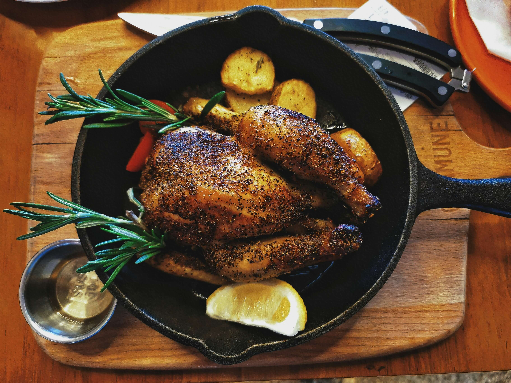

Gourmet Innovation
We source all our ingredients from local producers. In our kitchen, every sauce, meat, and vegetarian dish is handcrafted using only the finest quality ingredients.
Mobile Service
Our food truck is fully equipped with all the necessary catering tools to serve any event, while strictly adhering to health and safety regulations.
Two Unique Brands
Simply Wild Chillies (our signature sauces) and Meat MyKitchen (our gourmet food) come together to deliver fresh, innovative flavors that delight our customers.
Truly South African
We bring you the best of South African cuisine, enriched by our experience with diverse international flavors to create unique and exciting dishes.
Meet Shaun and Wendy-Leigh
My love affair for food started when I was 5, by 8 years old I was cooking a whole Sunday roast. After years in the kitchens across South Africa I developed a passion for making chilli sauces. In 2012 Simply Wild Chillies was born. For the next 4 years after sitting on the fence we started bottling our own unique chilli sauces and taking them to market. Like most dreams, it sadly faded into the haze of hectic careers and the business of life in general. Two years later an insatiable urge evolved into the idea of starting a food truck. Meat MyKitchen food trailer was born, it combines our idea of gourmet flavourful food brought to the streets. A restaurant eatery, with the convenience of a fully equipped food trailer. And so our dream of starting a mobile eatery began...
Four years in and a brand that is synonymous amongst our loyal customers, has resulted in the birth of our new Meat MyKitchen mini food truck.
What makes the food we serve special? Your food is prepared by professional chefs who are as passionate about their food as we are about our customers. At the end of the day, food made with love just tastes better.
-
1970s
The love affair begins...
My love affair for food started when I was 5, by 8 years old I was cooking a whole Sunday roast.
 -
2012
Simply Wild Chillies is born
After years in the kitchens across South Africa I developed a passion for making chilli sauces. In 2012 Simply Wild Chillies was born. For the next 4 years after sitting on the fence we started bottling our own unique chilli sauces and taking them to market. Like most dreams, it sadly faded into the haze of hectic careers and the business of life in general.
.jpeg)
-
2020
Meat MyKitchen is born
Two years later an insatiable urge evolved into the idea of starting a food truck. Meat MyKitchen food trailer was born, it combines our idea of gourmet flavourful food brought to the streets. A restaurant eatery, with the convenience of a fully equipped food trailer. And so our dream of starting a mobile eatery began...

-
2024
Our mini food truck joins the family
Four years in and a brand that is synonymous amongst our loyal customers, has resulted in the birth of our new Meat MyKitchen mini food truck.

On bustling streets,
where food trucks roam,
chimichangas crisp,
burgers call home.
Salads fresh,
a colourful delight,
Street food magic,
from morning till night.
Unleash the flavour,
every bite a thrill,
Meat MyKitchen,
where dreams fulfill.
A symphony of tastes,
a culinary cheer,
in every dish,
love and joy appear.